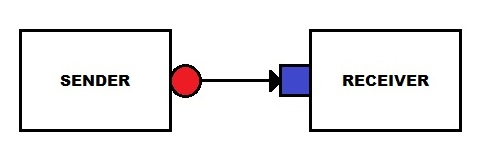

UVM makes it effortless to transfer data between components through its implementation of Transaction-Level Modeling (TLM).
TLM uses transactions, which are instances of sequence items, to encapsulate the data being passed from one component to another.
By using TLM, UVM enables efficient and effective communication between components, making it easier to verify the functionality of digital designs.
For example, let's say we have two UVM components - a sender and a receiver.
The sender fills a transaction with data and the TLM implementation facilitates the transfer of this transaction to the receiver.
Consider the scenario where pin level data is sampled at the interface and stored in a sequence item handle in the monitor. Using TLM, this transaction can be effortlessly sent to the scoreboard, where the monitor serves as the sender and the scoreboard as the receiver.
uvm_blocking_put_port - uvm_blocking_put_imp pair is the most basic TLM concept.
To start with, declare put_port in sender and put_imp in receiver. 'imp' stands for implementation.
Code in sender: uvm_blocking_put_port#(seq_item) handle_name;
uvm_blocking_put_port#(transaction) put_port;
Code in receiver: uvm_blocking_put_imp#(seq_item, receiver_class) handle_name;
uvm_blocking_put_imp#(transaction, txn_receiver) put_imp;
uvm_blocking_put_port takes sequence_item as parameter. uvm_blocking_put_imp takes receiver class name along with sequence_item as parameter.
Method ‘put’ is called in the run phase of the sender. Instance of sequence item where data is stored is sent as an input to the 'put' method. This 'put' method is defined as a task in receiver class.
Code in sender: Calling 'put' in run_phase.
uvm_blocking_put_port#(transaction) put_port;
. . .
virtual task run_phase(uvm_phase phase);
. . .
put_port.put(txn);
. . .
endtask : run_phase
Code in receiver: Defining 'put' as a task.
uvm_blocking_put_imp#(transaction, txn_receiver) put_imp;
. . .
virtual task put(transaction txn);
//Implementation based on protocol
endtask
"put" method blocks control until all the code inside the task has been executed, even if that code spans multiple time slots. The "put" method is referred to as "blocking" due to its ability to pause control until completion.
To establish communication between the sender and receiver, the "put_port" and "put_imp" are connected using the "connect" method. This connection is established in the "connect_phase" of the class, where instances of the sender and receiver can be accessed.
For instance, in the context of a monitor and a scoreboard, the connection between the monitor's "put_port" and the scoreboard's "put_imp" would occur in the "connect_phase" of the environment.
Code in environment:
sender.put_port.connect(receiver.put_imp);
In above figure, blue square represents a port and red circle represents its imp. Arrow between them represents the direction of data flow.
A simple seq_item with 3 fields is used: wr_data, wr_addr and wr_en
Constraint is used so that wr_data is always greater than 8'h111_1111
class transaction extends uvm_sequence_item;
rand bit [7:0] wr_data;
bit [3:0] wr_addr;
bit wr_en;
`uvm_object_utils_begin(transaction)
`uvm_field_int(wr_data,UVM_ALL_ON)
`uvm_field_int(wr_addr,UVM_ALL_ON)
`uvm_field_int(wr_en,UVM_ALL_ON)
`uvm_object_utils_end
function new(string name = "transaction");
super.new(name);
endfunction
constraint limit_wr_data {wr_data > 8'b0111_1111;};
endclass
class txn_sender is extended from uvm_component.
In this example, 16 packets of seq_item is sent from sender to receiver using uvm_blocking_put_port.
class txn_sender extends uvm_component;
`uvm_component_utils(txn_sender)
transaction txn;
uvm_blocking_put_port#(transaction) put_port;
function new(string name, uvm_component parent);
super.new(name, parent);
put_port = new("put_port", this);
endfunction : new
virtual task run_phase(uvm_phase phase);
phase.raise_objection(this);
$display("\n################### SIM TIME %0t ####################\n", $time);
for(int i = 0; i < 16; i++) begin
txn = transaction::type_id::create("txn", this);
txn.randomize();
txn.wr_addr = i;
txn.wr_en = 1;
$display(":::SENDER::: wr_data %0d wr_addr %0d time %0t", txn.wr_data, i, $time);
put_port.put(txn);
$display("\n################### SIM TIME %0t ####################\n", $time);
end
phase.drop_objection(this);
endtask : run_phase
endclass : txn_sender
'put' method called in sender is defined in receiver class.
A delay element is included in the definition of 'put' method to show its blocking nature. Simulation control is returned to sender only after this blocking is cleared.
class txn_receiver extends uvm_component;
`uvm_component_utils(txn_receiver)
transaction txn;
uvm_blocking_put_imp#(transaction, txn_receiver) put_imp;
function new(string name, uvm_component parent);
super.new(name, parent);
put_imp = new("put_imp", this);
endfunction : new
virtual task put(transaction txn);
$display("::RECEIVER:: BEFORE BLOCKING");
$display("::RECEIVER:: wr_data %0d wr_addr %0d time %0t", txn.wr_data, txn.wr_addr, $time);
#5; //BLOCKING for #5 time
$display("::RECEIVER:: AFTER BLOCKING #5");
$display("::RECEIVER:: wr_data %0d wr_addr %0d time %0t", txn.wr_data, txn.wr_addr, $time);
endtask
endclass : txn_receiver
Objects of sender and receiver are created, connect() method is used to accomplish connection between port and imp.
In general, monitor put_port and scoreboard put_imp are connected in connect phase of environment.
In below code, objects of sender and receiver are created and connect() is used to link put_port and put_imp in connect_phase of uvm_test (Skipped environment class to reduce code)
class test extends uvm_test;
`uvm_component_utils(test)
txn_sender sender;
txn_receiver receiver;
function new(string name = "test",uvm_component parent=null);
super.new(name,parent);
endfunction : new
virtual function void build_phase(uvm_phase phase);
super.build_phase(phase);
sender = txn_sender::type_id::create("sender", this);
receiver = txn_receiver::type_id::create("receiver", this);
endfunction : build_phase
function void connect_phase(uvm_phase phase);
sender.put_port.connect(receiver.put_imp);
endfunction : connect_phase
endclass : test
################### SIM TIME 0 ####################
:::SENDER::: wr_data 135 wr_addr 0 time 0
::RECEIVER:: BEFORE BLOCKING
::RECEIVER:: wr_data 135 wr_addr 0 time 0
::RECEIVER:: AFTER BLOCKING #5
::RECEIVER:: wr_data 135 wr_addr 0 time 5
################### SIM TIME 5 ####################
:::SENDER::: wr_data 173 wr_addr 1 time 5
::RECEIVER:: BEFORE BLOCKING
::RECEIVER:: wr_data 173 wr_addr 1 time 5
::RECEIVER:: AFTER BLOCKING #5
::RECEIVER:: wr_data 173 wr_addr 1 time 10
################### SIM TIME 10 ####################
:::SENDER::: wr_data 191 wr_addr 2 time 10
::RECEIVER:: BEFORE BLOCKING
::RECEIVER:: wr_data 191 wr_addr 2 time 10
::RECEIVER:: AFTER BLOCKING #5
::RECEIVER:: wr_data 191 wr_addr 2 time 15
################### SIM TIME 15 ####################
:::SENDER::: wr_data 185 wr_addr 3 time 15
::RECEIVER:: BEFORE BLOCKING
::RECEIVER:: wr_data 185 wr_addr 3 time 15
::RECEIVER:: AFTER BLOCKING #5
::RECEIVER:: wr_data 185 wr_addr 3 time 20
################### SIM TIME 20 ####################
:::SENDER::: wr_data 144 wr_addr 4 time 20
::RECEIVER:: BEFORE BLOCKING
::RECEIVER:: wr_data 144 wr_addr 4 time 20
::RECEIVER:: AFTER BLOCKING #5
::RECEIVER:: wr_data 144 wr_addr 4 time 25
################### SIM TIME 25 ####################
:::SENDER::: wr_data 203 wr_addr 5 time 25
::RECEIVER:: BEFORE BLOCKING
::RECEIVER:: wr_data 203 wr_addr 5 time 25
::RECEIVER:: AFTER BLOCKING #5
::RECEIVER:: wr_data 203 wr_addr 5 time 30
################### SIM TIME 30 ####################
:::SENDER::: wr_data 134 wr_addr 6 time 30
::RECEIVER:: BEFORE BLOCKING
::RECEIVER:: wr_data 134 wr_addr 6 time 30
::RECEIVER:: AFTER BLOCKING #5
::RECEIVER:: wr_data 134 wr_addr 6 time 35
################### SIM TIME 35 ####################
:::SENDER::: wr_data 240 wr_addr 7 time 35
::RECEIVER:: BEFORE BLOCKING
::RECEIVER:: wr_data 240 wr_addr 7 time 35
::RECEIVER:: AFTER BLOCKING #5
::RECEIVER:: wr_data 240 wr_addr 7 time 40
################### SIM TIME 40 ####################
:::SENDER::: wr_data 201 wr_addr 8 time 40
::RECEIVER:: BEFORE BLOCKING
::RECEIVER:: wr_data 201 wr_addr 8 time 40
::RECEIVER:: AFTER BLOCKING #5
::RECEIVER:: wr_data 201 wr_addr 8 time 45
################### SIM TIME 45 ####################
:::SENDER::: wr_data 173 wr_addr 9 time 45
::RECEIVER:: BEFORE BLOCKING
::RECEIVER:: wr_data 173 wr_addr 9 time 45
::RECEIVER:: AFTER BLOCKING #5
::RECEIVER:: wr_data 173 wr_addr 9 time 50
################### SIM TIME 50 ####################
:::SENDER::: wr_data 178 wr_addr 10 time 50
::RECEIVER:: BEFORE BLOCKING
::RECEIVER:: wr_data 178 wr_addr 10 time 50
::RECEIVER:: AFTER BLOCKING #5
::RECEIVER:: wr_data 178 wr_addr 10 time 55
################### SIM TIME 55 ####################
:::SENDER::: wr_data 151 wr_addr 11 time 55
::RECEIVER:: BEFORE BLOCKING
::RECEIVER:: wr_data 151 wr_addr 11 time 55
::RECEIVER:: AFTER BLOCKING #5
::RECEIVER:: wr_data 151 wr_addr 11 time 60
################### SIM TIME 60 ####################
:::SENDER::: wr_data 233 wr_addr 12 time 60
::RECEIVER:: BEFORE BLOCKING
::RECEIVER:: wr_data 233 wr_addr 12 time 60
::RECEIVER:: AFTER BLOCKING #5
::RECEIVER:: wr_data 233 wr_addr 12 time 65
################### SIM TIME 65 ####################
:::SENDER::: wr_data 208 wr_addr 13 time 65
::RECEIVER:: BEFORE BLOCKING
::RECEIVER:: wr_data 208 wr_addr 13 time 65
::RECEIVER:: AFTER BLOCKING #5
::RECEIVER:: wr_data 208 wr_addr 13 time 70
################### SIM TIME 70 ####################
:::SENDER::: wr_data 255 wr_addr 14 time 70
::RECEIVER:: BEFORE BLOCKING
::RECEIVER:: wr_data 255 wr_addr 14 time 70
::RECEIVER:: AFTER BLOCKING #5
::RECEIVER:: wr_data 255 wr_addr 14 time 75
################### SIM TIME 75 ####################
:::SENDER::: wr_data 192 wr_addr 15 time 75
::RECEIVER:: BEFORE BLOCKING
::RECEIVER:: wr_data 192 wr_addr 15 time 75
::RECEIVER:: AFTER BLOCKING #5
::RECEIVER:: wr_data 192 wr_addr 15 time 80
################### SIM TIME 80 ####################
In contrast to put_port, get_port is declared in receiver. get_imp is declared in sender.
Blue square in above figure indicates get_port and it is declared in receiver. Red circle indicates get_imp and it is declared in sender.
Algorithmically, receiver requests for data and sender sends it. Sender blocks simulation if data is not immediately available.
To start with, declare get_port in receiver and get_imp in sender.
Code in receiver: uvm_blocking_get_port#(seq_item) handle_name;
uvm_blocking_get_port#(transaction) get_port;
Code in sender: uvm_blocking_get_imp#(seq_item, receiver_class) handle_name;
uvm_blocking_get_imp#(transaction, txn_sender) get_imp;
uvm_blocking_get_port takes sequence_item as parameter. uvm_blocking_get_imp takes sender class name along with sequence_item as parameter.
Method ‘get’ is called in the run phase of the receiver class and it is defined as a task in the sender class. It blocks simulation control until all the code inside it is implemented. This reflects the blocking nature of uvm_blocking_get_port - uvm_blocking_get_imp duo.
Code in receiver: calling 'get' in run_phase.
uvm_blocking_get_port#(transaction) get_port;
. . .
virtual task run_phase(uvm_phase phase);
. . .
get_port.get(txn);
. . .
endtask : run_phase
Code in sender: Defining 'get' as a task.
uvm_blocking_get_imp#(transaction, txn_sender) get_imp;
. . .
virtual task get(output transaction txn);
//Implementation based on protocol
endtask
'connect' method is coded in connect_phase of the class where instances of sender and receiver are accessible.
Code in environment:
receiver.get_port.connect(sender.get_imp);
In this example, 16 packets of seq_item is requested by the receiver.
class txn_receiver extends uvm_component;
`uvm_component_utils(txn_receiver)
transaction txn;
uvm_blocking_get_port#(transaction) get_port;
function new(string name, uvm_component parent);
super.new(name, parent);
get_port = new("get_port", this);
endfunction : new
virtual task run_phase(uvm_phase phase);
phase.raise_objection(this);
txn = transaction::type_id::create("txn", this);
$display("\n################### SIM TIME %0t ####################\n", $time);
for(int i = 0; i < 16; i++) begin
get_port.get(txn);
$display("::RECEIVER:: wr_data %0d wr_addr %0d time %0t", txn.wr_data, txn.wr_addr, $time);
$display("\n################### SIM TIME %0t ####################\n", $time);
end
phase.drop_objection(this);
endtask : run_phase
endclass : txn_receiver
'get' method is defined in sender.
A delay element is included in the definition of 'get' method to show its blocking nature. Simulation control is returned to receiver only after this blocking is cleared.
class txn_sender extends uvm_component;
`uvm_component_utils(txn_sender)
transaction txn;
uvm_blocking_get_imp#(transaction,txn_sender) get_imp;
logic [3:0] wr_addr = 4'b0;
function new(string name, uvm_component parent);
super.new(name, parent);
get_imp = new("get_imp", this);
endfunction : new
virtual task get(output transaction txn);
txn = transaction::type_id::create("txn", this);
txn.randomize();
txn.wr_addr = wr_addr;
txn.wr_en = 1;
$display(":::SENDER::: BEFORE BLOCKING");
$display(":::SENDER::: wr_data %0d wr_addr %0d time %0t", txn.wr_data, wr_addr, $time);
#5; //BLOCKING for #5 time
$display(":::SENDER::: AFTER BLOCKING #5");
$display(":::SENDER::: wr_data %0d wr_addr %0d time %0t", txn.wr_data, wr_addr, $time);
wr_addr = wr_addr + 1;
endtask
endclass : txn_sender
Irrespective of put/get method, connect is always coded as port.connect(imp);
connect_phase of uvm_test is used to call 'connect' method in below example.(Skipped environment class to reduce code)
class test extends uvm_test;
`uvm_component_utils(test)
txn_sender sender;
txn_receiver receiver;
function new(string name = "test",uvm_component parent=null);
super.new(name,parent);
endfunction : new
virtual function void build_phase(uvm_phase phase);
super.build_phase(phase);
sender = txn_sender::type_id::create("sender", this);
receiver = txn_receiver::type_id::create("receiver", this);
endfunction : build_phase
function void connect_phase(uvm_phase phase);
receiver.get_port.connect(sender.get_imp);
endfunction : connect_phase
endclass : test
################### SIM TIME 0 ####################
:::SENDER::: BEFORE BLOCKING
:::SENDER::: wr_data 182 wr_addr 0 time 0
:::SENDER::: AFTER BLOCKING #5
:::SENDER::: wr_data 182 wr_addr 0 time 5
::RECEIVER:: wr_data 182 wr_addr 0 time 5
################### SIM TIME 5 ####################
:::SENDER::: BEFORE BLOCKING
:::SENDER::: wr_data 177 wr_addr 1 time 5
:::SENDER::: AFTER BLOCKING #5
:::SENDER::: wr_data 177 wr_addr 1 time 10
::RECEIVER:: wr_data 177 wr_addr 1 time 10
################### SIM TIME 10 ####################
:::SENDER::: BEFORE BLOCKING
:::SENDER::: wr_data 163 wr_addr 2 time 10
:::SENDER::: AFTER BLOCKING #5
:::SENDER::: wr_data 163 wr_addr 2 time 15
::RECEIVER:: wr_data 163 wr_addr 2 time 15
################### SIM TIME 15 ####################
:::SENDER::: BEFORE BLOCKING
:::SENDER::: wr_data 226 wr_addr 3 time 15
:::SENDER::: AFTER BLOCKING #5
:::SENDER::: wr_data 226 wr_addr 3 time 20
::RECEIVER:: wr_data 226 wr_addr 3 time 20
################### SIM TIME 20 ####################
:::SENDER::: BEFORE BLOCKING
:::SENDER::: wr_data 165 wr_addr 4 time 20
:::SENDER::: AFTER BLOCKING #5
:::SENDER::: wr_data 165 wr_addr 4 time 25
::RECEIVER:: wr_data 165 wr_addr 4 time 25
################### SIM TIME 25 ####################
:::SENDER::: BEFORE BLOCKING
:::SENDER::: wr_data 158 wr_addr 5 time 25
:::SENDER::: AFTER BLOCKING #5
:::SENDER::: wr_data 158 wr_addr 5 time 30
::RECEIVER:: wr_data 158 wr_addr 5 time 30
################### SIM TIME 30 ####################
:::SENDER::: BEFORE BLOCKING
:::SENDER::: wr_data 199 wr_addr 6 time 30
:::SENDER::: AFTER BLOCKING #5
:::SENDER::: wr_data 199 wr_addr 6 time 35
::RECEIVER:: wr_data 199 wr_addr 6 time 35
################### SIM TIME 35 ####################
:::SENDER::: BEFORE BLOCKING
:::SENDER::: wr_data 150 wr_addr 7 time 35
:::SENDER::: AFTER BLOCKING #5
:::SENDER::: wr_data 150 wr_addr 7 time 40
::RECEIVER:: wr_data 150 wr_addr 7 time 40
################### SIM TIME 40 ####################
:::SENDER::: BEFORE BLOCKING
:::SENDER::: wr_data 158 wr_addr 8 time 40
:::SENDER::: AFTER BLOCKING #5
:::SENDER::: wr_data 158 wr_addr 8 time 45
::RECEIVER:: wr_data 158 wr_addr 8 time 45
################### SIM TIME 45 ####################
:::SENDER::: BEFORE BLOCKING
:::SENDER::: wr_data 230 wr_addr 9 time 45
:::SENDER::: AFTER BLOCKING #5
:::SENDER::: wr_data 230 wr_addr 9 time 50
::RECEIVER:: wr_data 230 wr_addr 9 time 50
################### SIM TIME 50 ####################
:::SENDER::: BEFORE BLOCKING
:::SENDER::: wr_data 181 wr_addr 10 time 50
:::SENDER::: AFTER BLOCKING #5
:::SENDER::: wr_data 181 wr_addr 10 time 55
::RECEIVER:: wr_data 181 wr_addr 10 time 55
################### SIM TIME 55 ####################
:::SENDER::: BEFORE BLOCKING
:::SENDER::: wr_data 140 wr_addr 11 time 55
:::SENDER::: AFTER BLOCKING #5
:::SENDER::: wr_data 140 wr_addr 11 time 60
::RECEIVER:: wr_data 140 wr_addr 11 time 60
################### SIM TIME 60 ####################
:::SENDER::: BEFORE BLOCKING
:::SENDER::: wr_data 237 wr_addr 12 time 60
:::SENDER::: AFTER BLOCKING #5
:::SENDER::: wr_data 237 wr_addr 12 time 65
::RECEIVER:: wr_data 237 wr_addr 12 time 65
################### SIM TIME 65 ####################
:::SENDER::: BEFORE BLOCKING
:::SENDER::: wr_data 191 wr_addr 13 time 65
:::SENDER::: AFTER BLOCKING #5
:::SENDER::: wr_data 191 wr_addr 13 time 70
::RECEIVER:: wr_data 191 wr_addr 13 time 70
################### SIM TIME 70 ####################
:::SENDER::: BEFORE BLOCKING
:::SENDER::: wr_data 146 wr_addr 14 time 70
:::SENDER::: AFTER BLOCKING #5
:::SENDER::: wr_data 146 wr_addr 14 time 75
::RECEIVER:: wr_data 146 wr_addr 14 time 75
################### SIM TIME 75 ####################
:::SENDER::: BEFORE BLOCKING
:::SENDER::: wr_data 185 wr_addr 15 time 75
:::SENDER::: AFTER BLOCKING #5
:::SENDER::: wr_data 185 wr_addr 15 time 80
::RECEIVER:: wr_data 185 wr_addr 15 time 80
################### SIM TIME 80 ####################
A summary of port, export, and imp declarations is as follows: uvm_*_export #(type T=int) uvm_*_port #(type T=int) uvm_*_imp #(type T=int) where the asterisk (*) can be any of the following: blocking_put //port, imp nonblocking_put //port, imp put //port, imp blocking_get //port, imp nonblocking_get //port, imp get //port, imp blocking_peek nonblocking_peek peek blocking_get_peek nonblocking_get_peek get_peek analysis